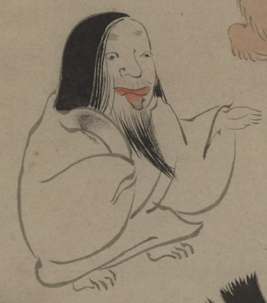

ひげを伸ばした化物。女装した化物かもしれない。髪を長く垂らして、舌を出している。白い衣を着ており、脚が短い。
出典：親書誌：U426_nichibunken_0150：付喪神絵詞；ツクモガミエコトバ／日付：2010／資源識別子：U426_nichibunken_0150_0024_0000
Copyright (c)2010- International Research Center for Japanese Studies, Kyoto, Japan. All rights reserved.